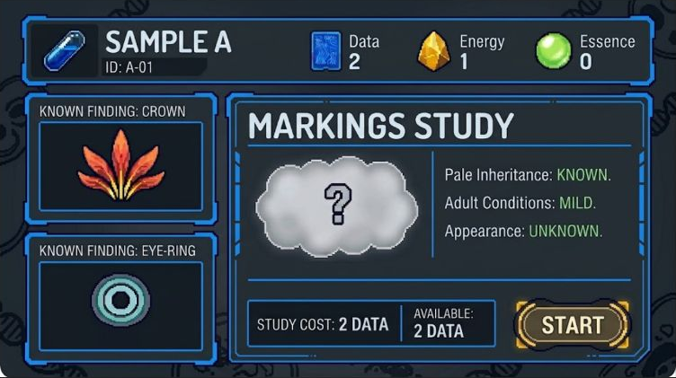

Go out.
Find something.
Choose an expedition and take the Companion along. Gather fictional supplies, discover samples and encounter wild critters. Bring your findings back when you’re ready to investigate.
Explore / Gather / ReturnLittle critters.
Big “what if?” energy.
Meet curious creatures. Discover what makes them tick. Build a lineage nobody else has. A hands-on, open-source game with advanced genomics underneath—and a whole world of “what if?” ahead.
Meet Critter Lab
For curious minds, happy tinkerers and anyone who has ever wondered: what happens if I try this?
Choose an expedition and take the Companion along. Gather fictional supplies, discover samples and encounter wild critters. Bring your findings back when you’re ready to investigate.
Explore / Gather / ReturnEvery sample is a little mystery. Study it at the Lab, uncover hidden traits and follow the clues. A surprising finding might be the start of your next big experiment.
Observe / Research / UnderstandResearch your way to your first creation. Get to know it, train it and discover what compatible pairings might bring to the next generation. Your collection becomes a family story.
Create / Connect / BreedThe game being designed. Current software previews show individual parts of this journey.
There’s more to a critter than its looks. A rich, fictional genomics engine connects what it inherits, what it can do and what it might pass on. Learn its secrets. Try a pairing. See what surprises you.

A critter can carry a trait you can’t see. Research and family history give you clues to what might appear in a future generation. There’s a reason to keep looking.
Chase unusual markings, explore a useful ability or develop your own distinctive family. Inherited traits combine and influence one another, making every pairing an experiment worth thinking about.
Genes give each critter its starting possibilities. Environment, development and training help shape the individual you spend time with. A family resemblance. A personality of its own.
The design includes traits shaped by several genes, genes that influence each other, hidden inherited variants, and rules connecting biology to abilities. Inheritance, environment and learned experience each have their own part to play. The first executable proof explores a small slice of that system.
Explore the open genetics framework →A complete local adventure. A wider world when you want one.
Explore, research, create, breed and print. The core game lives with your kit, ready to play without a cloud subscription or a phone.
Take your discoveries further. Join a worldwide network of curious breeders and collectors, and find possibilities beyond your own kit.
Standalone play and Cloud Pass are part of the product being developed. Availability and pricing have not been announced.
Something to take with you.
Somewhere to follow a hunch.
A home to come back to.
One portable, three views: Probe for exploring, Cargo for carried findings, and Companions for spending time with your travelling critters.
Wild captures stay distinct from bonded companions. Finding a critter is only the beginning of its story.
Probe / Cargo / Companions
The Lab is where samples become discoveries. Investigate inherited possibilities, experiment with supplies, build your collection and choose what to create.
Pick it up to explore at home. When docked, the intended living display brings habitats, critters and ongoing research into view.
Research / Create / DiscoverThe caddy is designed to charge the Lab and Companion, print records, and keep a persistent summary of habitats, residents, bulk inventory and device status.
The Lab carries the visual living world. The caddy keeps the overview close by. Exact hardware and synchronization details are still being developed.
Charge / Print / Keep trackCollect for beauty.
Experiment for possibility.
Explore just because.
Pursue unusual markings, a useful ability or a lineage that thrives in a particular environment. There is no single ideal critter everyone has to make.
Your collection preserves individuals and their histories. Another player’s discovery stays theirs: scanning a critter doesn’t grant ownership or breeding permission.
Use gathered supplies to try combinations, follow clues and discover useful recipes. Your encyclopedia retains what you learn for the next experiment.
Explore environments with their own populations, resources and conditions. Inherited affinities help explain where a critter may thrive; exact habitat simulation rules are still being designed.
Return to partially decoded samples, compare new findings with familiar families, and decide which investigation or lineage deserves your attention next.
From a little screen
to your field notebook.
The caddy’s intended printer brings the collection into the physical world. A critter record can become something to keep, compare or share alongside the instruments you play with.
Specimen cards, research records and family trees turn your discoveries into a collection you can spread across the table. The optional Cloud Pass adds access to lineage records and certificates through the global network. Print formats are still in development.
Play it. Understand it.
Make it your own.
The rules, the code, the making of it: Critter Lab is being built in the open. Follow a discovery all the way from a critter’s traits to the logic that makes them possible.
Read the game systems. Explore the software. Follow the hardware and enclosure sources as they develop. Learn from it, experiment with your own ideas, or contribute something back.
Explore the source →Software: AGPL-3.0 · Hardware sources: CERN-OHL-S-2.0 · Documentation and eligible art: CC BY-SA 4.0. License details
We’re building Critter Lab in the open. Explore the current Lab preview, or look under the hood at the designs, rules and source.
Not yet. Critter Lab is in design and prototyping. The images show concept studies, and the project is not yet a complete buildable kit. A release date and selling price have not been announced.
No. The standalone kit is designed for device-hosted setup and core play without a phone or cloud subscription. Supporting software can complement the instruments.
No. Core play and nearby-kit interaction belong to the standalone experience. The optional Cloud Pass opens the global trading and breeding network, lineage, certificates and minigames.
Yes, Lab-only investigation is part of the design. The Companion expands exploration and everyday critter interaction; it is not intended to be a requirement for every discovery.
Yes. The public project contains the product specifications, code and design studies. Software uses AGPL-3.0-only, hardware sources use CERN-OHL-S-2.0, and documentation and eligible artwork use CC-BY-SA-4.0.